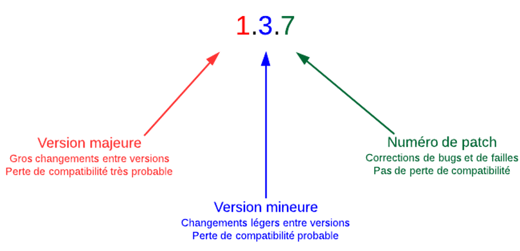

NPM
Npm est le gestionnaire de paquets (modules) officiel de Node.js. Celui-ci permet d’ajouter des modules externes dans une application Node.js Depuis la version 0.6.3 de Node.js, npm fait partie de l'environnement et est donc automatiquement installé par défaut. npm fonctionne avec un terminal et gère les dépendances pour une application. Il permet également d'installer des applications Node.js disponibles sur le dépôt npm.
npm init
La commande npm init permet d’initialiser un projet Node.js dans le but de gérer les modules associés au projet.
Cette commande crée un fichier nommé package.json qui contiendra les configurations du projet ainsi que la liste des divers modules nécessaires pour son bon fonctionnement.
Cette commande devrait toujours être exécutée avant de procéder à l’installation de modules.
Manuel
{
"name": "AppName",
"version": "0.1.0",
"private": true,
"dependencies": {
"@types/node": "^16.18.32",
"typescript": "^4.9.5",
"web-vitals": "^2.1.4"
}
}
npm install
La commande npm install permet d’installer des modules dans un projet. Lors de l’ajout d’un premier module au projet, le dossier node_modules est automatiquement créé. Pour installer un module dans un projet :
Pour chaque installation de module :
Un sous-dossier au nom du module est créé. Toutes les dépendances sont également chargées. Le module et ses dépendances sont ajoutées dans le fichier package.json
Partage et Déploiement :
Lorsqu’on partage un projet, on ne fournit généralement pas le dossier node_modules car sa taille peut devenir relativement élevée et les versions de Node.js ne sont pas nécessairement les mêmes.
La commande npm install (sans préciser le nom du module) permet d’installer automatiquement tous les modules manquants (npm se fie au fichier package.json pour identifier les modules à installer)
Les options
Lors de l’installation de modules, je recommande toujours d’utiliser la commande disponible dans la procédure d’installation du module. Parfois, certaines options sont nécessaires.
Manuel
Les plus courantes :
- --save ou -S : Ajoute le module à la liste de dépendances dans le fichier package.json. Cette option n’est plus nécessaire depuis la version npm 5.0.0, les modules étant ajoutés par défaut à la liste de dépendances. Vous verrez cependant régulièrement cette option dans les procédures d’installation de modules officiels.
- --global ou -g : Ajoute le module globalement sur votre PC. Je recommande peu cette option à moins que le module ne soit pas implicitement impliqué dans le projet. npm global (If you are using npm 5.2 or higher, we recommend using npx to run packages globally).
npm install --save-dev
Dans votre développement, c’est possible que vous utilisiez des modules seulement pour aider le développement, mais qui ne sont pas nécessaires en production.
Dans ce cas, il faut utiliser npm install avec l’option --save-dev.
Ex :
Dans packages.json ça donne :
{
"name": "AppName",
"version": "0.1.0",
"private": true,
"dependencies": {
"@types/node": "^16.18.32",
"typescript": "^4.9.5",
"web-vitals": "^2.1.4"
},
"devDependencies": {
"nodemon": "^2.0.22"
}
}
Module d’aide au développement – nodemon
Module qui observe les fichiers de votre projet et qui redémarre le programme automatiquement.
Pour faciliter l’utilisation de nodemon, ajouter un script dans packages.json :
{
"name": "AppName",
"version": "0.1.0",
"private": true,
"dependencies": {
"@types/node": "^16.18.32",
"typescript": "^4.9.5",
"web-vitals": "^2.1.4"
},
"scripts": {
"start": "nodemon fichier.js"
},
"devDependencies": {
"nodemon": "^2.0.22"
}
}
Pour exécuter votre programme, il suffit de faire la commande :
Module d’aide au développement – concurrently
Module qui permet d’exécuter plusieurs commandes en même temps. Utile pour rouler tsc et nodemon en même temps.
Pour installer concurrently :
Pour que tsc compile automatiquement votre code, utiliser la commande :
Donc, pour compiler et exécuter en même temps, écrire le script suivant dans package.json :
{
"name": "AppName",
"version": "0.1.0",
"private": true,
"dependencies": {
"@types/node": "^16.18.32",
"typescript": "^4.9.5",
"web-vitals": "^2.1.4"
},
"scripts": {
"start": "nodemon fichier.js",
"dev": "concurrently \"tsc --watch\" \"nodemon -q ./dist/serveur.js\""
},
"devDependencies": {
"nodemon": "^2.0.22"
}
}
Module dotenv
À partir de node 20.6.0, il est possible de créer un fichier .env pour y mettre les paramètres de votre application.
Paramétrer votre application directement dans le code est imprudent. Des informations confidentielles peuvent se retrouver dans votre repo GitHub à la vue de tout le monde, ex :
const cleAPI = "FKSDKLJFKDSKLJF898FSDKJKSD898F9DSKLFDSKFSD";
const utilisateurBD = "admin";
const motDePasse="password";
Fichier contenant les paramètres : .env
Utilisation dans le code :
npm – mise à jour
Commande pour mettre à jour les modules de votre application :

"dependencies": {
"markdown": "0.3.5" // Version 0.3.5 uniquement
}
"dependencies": {
"markdown": "~0.3.5" // OK pour les versions 0.3.5, 0.3.6, 0.3.7, etc. jusqu'à la version 0.4.0 non incluse
}
"dependencies": {
"markdown": "~0.3" // OK pour les versions 0.3.X, 0.4.X, 0.5.X jusqu'à la version 1.0.0 non incluse
}
ES6 et CommonJS
Node.js est bâtie sur le moteur V8. La version ECMAScript 2016 n’est pas encore totalement supportée: Node.js vs ES6
Pour plus d’information : Node Green
Pour ces raisons, TypeScript doit compiler en ES6 pour assurer la plus grande compatibilité avec Node.
npm - Publier
Toute personne ayant un compte npm peut publier un module La procédure est détaillée dans la documentation officielle npm : Publishing
npm - Sécurité
Il importe de faire attention lors de l’ajout d’un module. Il faut s’assurer que le module est sécuritaire.
.gitignore vs node et .env
Il est essentiel de ne pas envoyer dans votre dépôt git le dossier node_modules, ajoutez cette ligne dans .gitignore :
De plus, il ne faut pas envoyer votre fichier de configuration :
Enfin, ne pas envoyer les fichiers JavaScripts compilés de TypeScript :
Module Lodash (_)
Le module Lodash (pour low dash ou en français : souligné) implémente des fonctions communes fréquemment utilisées par les programmeurs :
- Itérer à travers des tableaux, des objets et des chaînes de caractères
- Manipuler et tester des valeurs
Pour l’installer :
Pour la compatibilité Typescript :
Pour l’utiliser :